This project had been on my list for a long time. But, as with all projects meant to be personal, it tended to slip slowly down the to-do list. Now the time has come, and I finally got to make this rug for my bathroom. It's meant to sit next to the bathtub and soak the water off wet feet. But it does more than that. It has a lovely texture — made of natural linen, it gently massages the feet, and it gives a minimalistic, handcrafted look to the interior.
For this project I used a large wooden frame loom with a detachable warping bar — the detachable bar is the feature that allows warping for projects longer than the loom itself. If you want to learn how to warp your loom for a rug or a long scarf, there's a separate tutorial on that.
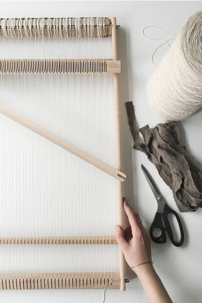
What you need
For this project you will need a loom with detachable warp bars, strong cotton or linen warp thread, a few pieces of cardboard for warping, and, of course, leftover fabric strips. I had some old and stained natural linen in my stash. I dyed the fabric with alder cones and iron for a darker shade and cut it lengthwise into 0.7–1.5 cm wide strips.
I warped my loom with one thread per notch, which means I only use half of the grooves on the heddle bar. Before you start a big project like that, make samples with different setts and different fabric widths to see which combination you like best.
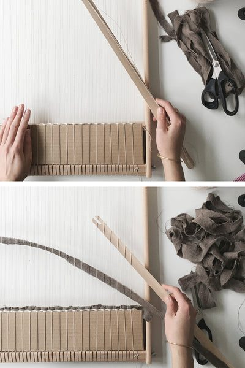
Secure the base
Start by putting a wide piece of cardboard between the alternating warp threads. It will prevent the weaving from sliding down. Next, weave a few passes with the same thread you used for warp to secure the base of your weaving. Once you're done, knot both ends together and start weaving with fabric.
At this point, don't worry about connecting the strips. Start weaving: over, under, over, etc. single warp threads. I use a heddle bar to speed up the process and create an opening between alternating warp threads.
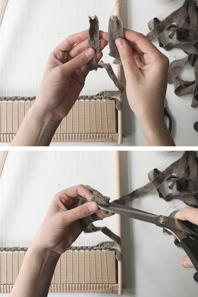
Connecting fabric strips
Once your fabric is too short to make another pass, it's time to connect it to the next strip. Put the ends together with the ends facing the same direction, and fold the tip. Make a small cut, creating small eyelets in both strips.
This is how they should look when opened. Now, put the new strip to the one you've been weaving with. Both ends should go in opposite directions; the eyelets should match, laying on top of each other. The new strip goes under the previous strip.
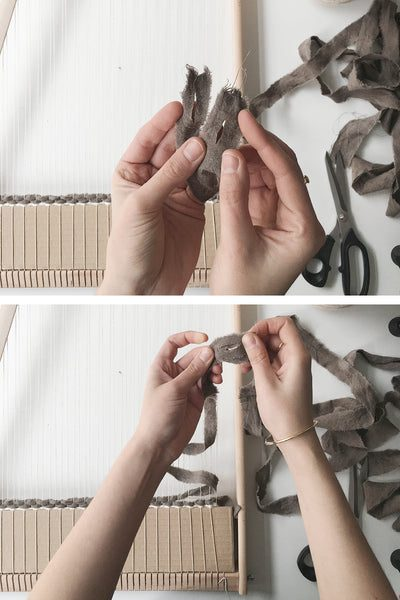
Making a continuous fabric thread
Now take the other end of the new strip of fabric and place it on top of the eyelet. Push it through the opening and pull it through. Keep pulling until the two strips connect. There should be no bulky knot forming, just a seamless continuation. This way you can keep adding to the fabric thread without having any loose end to take care of later.
The best thing about rag rugs is that there is almost no finishing needed; once you are done weaving, it's ready to be taken off the loom and used.
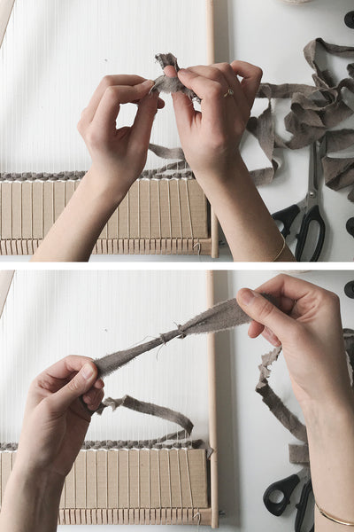
Keep an eye on the edges
As you keep weaving, the warp threads might start to pull into the center. To avoid that, try these two tricks: first, leave enough fabric on the side. Try leaving more than you think is needed. It will most likely start pulling in anyway.
You can also control the position of the warp threads using a pen or closed scissors. I kept pushing the warp ends outward as I went, making sure the spacing stayed even.
Remember to beat the fabric down properly. The rug needs to be beaten down well if you don't want it to turn out flimsy. For a solid structure, use a fork or a comb to beat it down and make the rug stiff.
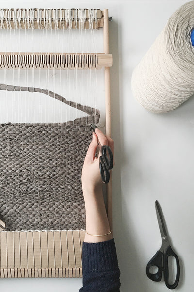
Weave the next sections
Once you've woven the first section, the weaving shouldn't slip down anymore. Remove the cardboard and wind that first section onto the lower bar by unscrewing the top and the bottom. Screw them back tight once you unwind enough warp.
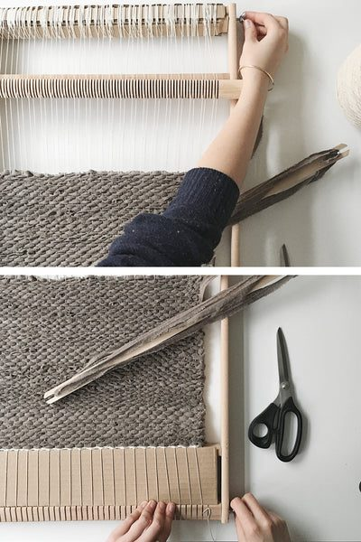
Weave on
Keep weaving, remembering to leave enough fabric on the sides and to control the warp spacing. I mark my progress with a piece of red yarn attached to the most outward warp and measure the distance until I have enough rug woven. For this project I wanted a 1 m long rug.
Once you're done, as at the very beginning, add a few passes of cotton thread at the top and knot both ends together.
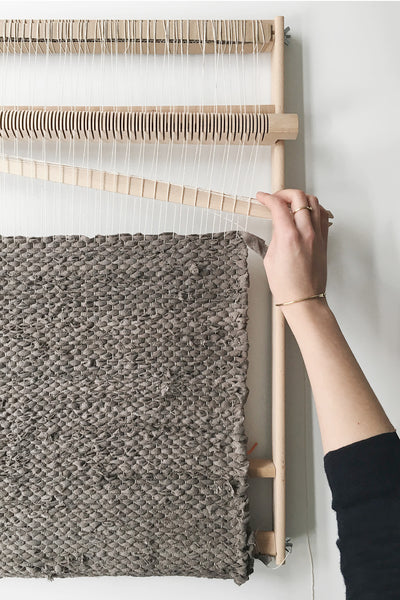
Cutting it off the loom
Almost done. Start cutting the warp threads in small groups of two and make an overhand knot to keep the rug from unraveling. If you don't want the fringe, you can weave it in later or sew some fabric tape around the edges. I chose fringe.
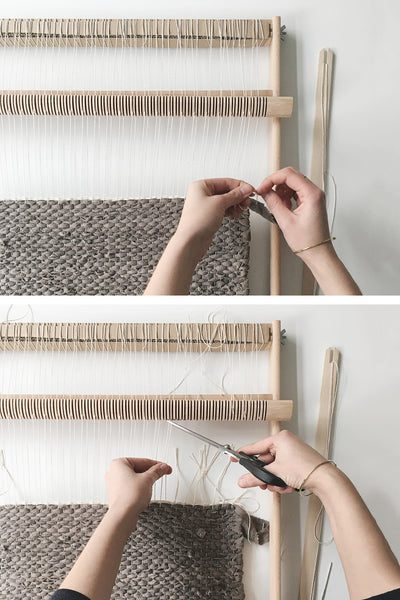
Unwind the rug
My favorite part — unwinding the project from the warp beam. Now we get to see the results of the hard work. Just unscrew the bottom bar from the loom and unwrap the rug.
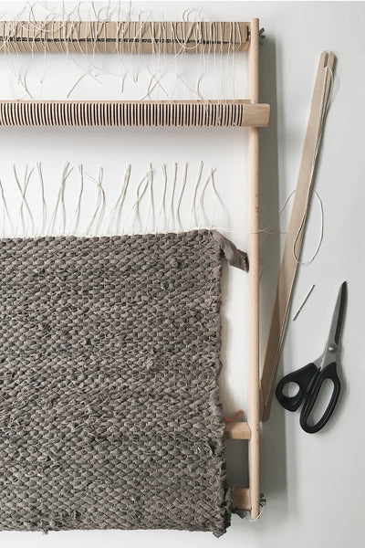
Finishing the other end
As in the previous step, keep cutting the warp threads in groups of two and making an overhand knot. When you're done, there are just two ends to weave in on each side of the rug — the ones we knotted together when securing the weaving with a few horizontal passes of thread. That's it. Your rug is done.
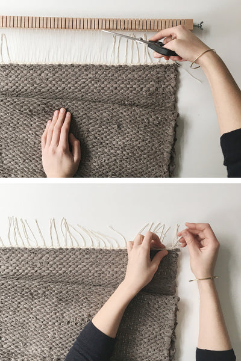
Handwoven linen rag rug, dyed with alder cones
This is the end result. It fits perfectly next to my bathtub, and because it's made of natural linen, it absorbs moisture beautifully and dries fast.